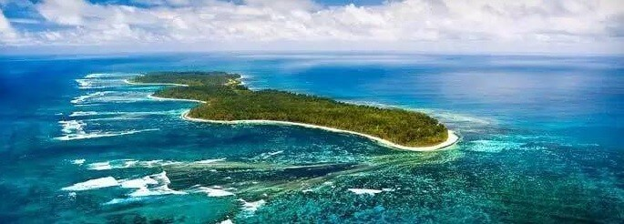
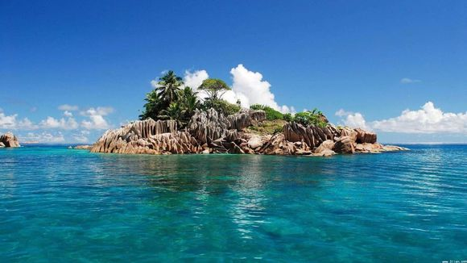
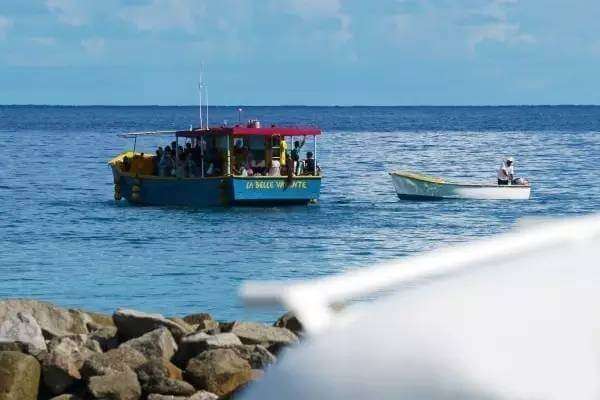
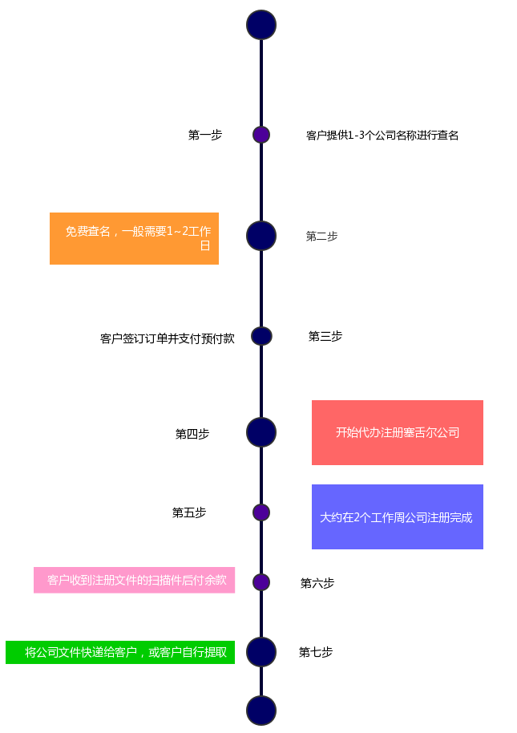

塞舌尔群岛介绍
INCLUDING
塞舌尔群岛位於印度洋内，由一百多个有名称的岛屿组成，大多数岛屿位於南纬四至五度。陆地面积455.39平方公里，领海面积约40万平方公里，专属海洋经济区面积约100万平方公里。人口8.5万（2005年）。
塞舌尔公司主要分为两个类别:国际业务公司(IBC)、特别执照公司(C.S.L)。通常以注册国际业务公司(IBC)最为普遍。
塞舌尔采用国际商业公司法为主要公司法，公司注册、运作和税务等方面相对简单，要求公司披露资料较少。

塞舌尔群岛注册资料
REQUIREMENT
1.公司名称：塞舌尔政府对公司名称没有太多限制，只要所选名称不与已注册名称相同或过于相似即可；如公司名称要使用与政府、金融保险等相关的字眼，需先申请相关的牌照;
2.公司股东/董事：至少一名股东、董事，无国籍限制;
3.注册资本：名义资本一般为US$100,000，资本可采用任何货币，无需验资;
4.注册地址：注册地址必须位于塞舌尔;
5.公司各成员的身份证明文件：护照、身份证扫描件;
6.公司各位成员的地址证明文件：银行账单、电话账单、驾驶执照等扫描件;
塞舌尔群岛注册优势
ADVANTAGE
1.保密性：商业资料完全保密。保障董事及股东个人资料，隐密性极高;
2.塞舌尔群岛国际商业公司（IBC）不需要缴纳任何税项，合理合法避税;
3.注册资本数额自由不用验资;
4.公司维护简单：公司只需年审，无需做账、报税、审计;
5.注册和维护价格便宜：塞舌尔是相比其它群岛公司中注册费用和年审费用最低的地区;

塞舌尔群岛注册流程
SPACIFIC PROCESS
